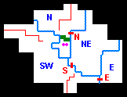

This page is no more than a bare-bones outline of the game, meant mainly for reference. The basic aims of each chapter will be stated, and the means hinted at. Sub-quests will be listed, without detail. Most of the sub-quests can be performed in more than one Chapter. They have been listed under the "most likely" Chapter.
| CHAPTER 1 - Into a Dark Night | 2 3 4 5 6 7 8 9 |
|
Locklear & Owyn must accompany Gorath to Krondor in the far South. You can go directly there, as long as you carefully build your characters on the way and pick up whichever provisions they need. However, in this Chapter you have the freedom to travel widely in Midkemia, so don't hurry! Among other places you can actually enter Dimwood, which is worth a try or two. There are many Side-Quests you can perform. All of them will still be available in Chapter 6.
- Brother Jeremy's Quest. Brother Jeremy lives in a house south of the road NE of Yabon.
- The Brak Nurr Quest. Go to the Mac Mordain Cadal (south of LaMut).
- The Tsurani Grey Warriors Quest. Go to the LaMut Garrison, and then speak to Sumani.
- Temple of Silban Quest. Go to Eggley & speak to Devon.
- Nago Quest. Close to Questor's View.
Having reached Krondor, you won't be able to enter the palace except via the sewers. James holds the key.
| CHAPTER 2 - Shadow of the Nighthawks | 1 3 4 5 6 7 8 9 |
James, Owyn & Gorath must go to Romney. In order to gain access to Romney you must get a Glazer's Seal. Make sure you visit the Oracle of Aal near Malac's Cross. Many Side-Quests are available, some of which will also be available in later Chapters:
- Lord Lyton's Quest. Visit Lord Lyton's house.
- The Rusalki Quest. Go to the Temple of Eortis.
- Haphra's Quest. Visit Haphra (north of Sloop).
- The Haunted Shop Quest. This is probably the most intricate Quest in the game, almost impossible to perform unless you know how! Talk to Nia at the Six Toe Tavern.
- The Kobolds' Quest. Go to the Mac Mordain Cadal (lower level).
- The Missing Joke Quest. Go to the Tavern in Questor's View, and then to LaMut.
- The Grain Quest. Go to the Temple of Dala. (Only in Chapters 2 and 3.)
| CHAPTER 3 - The Spyglass and the Spider | 1 2 4 5 6 7 8 9 |
James, Owyn and Gorath must find out who massacred the soldiers in the Black Sheep Tavern in Romney. You must go to Kenting Rush in order to find Navon, the leader of the Nighthawks. He is the guilty one, but you must find evidence. The evidence is scattered widely. Talk to Abuk, and then go to Silden and perform a small Quest for Joftaz. Talk to Count Corvalis in Cavall Keep, and his daughter Ugyne. Ultimately there are two ways of exposing Navon, either by becoming a member of the sect of Kahooli (by starving), or by recovering the Abbot's Journal from Cavall Run. Kill Navon, and get Navon's key, which will open the last door in Cavall Run. End of Chapter. Make sure that either Gorath or Owyn holds the Spyglass, before you finish.Before heading North towards Kenting Rush there is a Side-Quest you can perform:
- The Guild War Quest. Talk to the Duke of Romney.
| CHAPTER 4 - Marked for Death | 1 2 3 5 6 7 8 9 |
|
Gorath and Owyn must escape, first from the Sar-Sargoth dungeons, and then from the Northlands via the Inclindel Pass. In order to escape from the dungeons, they must find the Interdictor Key. In order to escape from the Northlands the following procedure is recommended:
- Find, and activate Nalar's Rib.
- Go to Armengar, and talk to Irmelyn.
- Rescue Obkhar from the Naphtha Mines, return to Armengar and talk to Irmelyn again.
- Go to Cullich's house.
- Go to the Inclindel bridge.
- Go to Harlech and talk to Moraewulf to get the password
- Escape via the Inclindel Bridge.
| CHAPTER 5 - When Rivers Run Blood | 1 2 3 4 6 7 8 9 |
|
James, Locklear & Patrus must accept a number of quests from Duke Martin, one at a time:
Now go to the Northward Pass west of Northwarden, and pay 2000 sovereigns to the Goblins guarding the pass. Now you're ready to accept a new Quest from Duke Martin:
- THE POISONED RATIONS QUEST. You must poison rations contained in three Moredhel Chests in the neighborhood.
- THE MISSING MINSTREL QUEST. You must find Tamney the Minstrel (in a barn outside Dencamp-on-the-Teeth), find his Geomancy Stones (in the Diviner's Halls), give them back to Tamney, who will reward you with three Diamonds.
- THE BATTLE PLANS QUEST. Find the Catapult outside Raglam, then find the missing Catapult Gear and fix the Catapult, thus enabling you to destroy Captain Kroldech's house in Raglam. Delekhan's battle plans will be found in this house.
- THE SIX SPELLCASTERS QUEST. Duke Martin's final quest involves finding and killing six Moredhel Spellcasters, who are waiting in a house in the South-West.
| CHAPTER 6 - Betrayal | 1 2 3 4 5 7 8 9 |
|
The basic quest in this Chapter is to get Gorath and Owyn to Elvandar. However there are numerous sub-quests and mini-quests which can (not necessarily) be performed before the End of Chapter is reached.
You can only access Elvandar through the Mac Mordain Cadal. When you exit the Mac West of the Mountains, you enter the final stage of Chapter 6. Locate Prince Calin. Find Eliaem the Rusalka, and accept her Quest, in order to get Eliaem's Shell. Finally locate the Ancient Valheru Ruins, find the Guarda Revanche, use Eliaem's Shell to repair it, and ultimately exit into Elvandar, where Tomas and Aglaranna await you.
- The IDOL OF LASSUR Quest. Talk to Kat in the Sewers below Krondor.
- The SARTH Quest.
- Talk to Nivek in the Krondor Tavern (to get his key).
- Go to Eggley (to get Sarth Dungeon Map).
- Go to Sarth.
- The ABBOT GRAVES Quest.
- Talk to Abbot Graves in Malac's Cross.
- Go to Sloop (to get Mitchel Waylander's Note).
- Bring Abbot Graves the Note.
- THE ALCOHOL MINI-QUEST (go to Kenting Rush).
| CHAPTER 7 - The Long Ride | 1 2 3 4 5 6 8 9 |
|
The basic quest here is to destroy the Rift Machine. In order to do this you must find the Waani, and then locate the Rift Machine. This should be fairly straightforward, and it IS (if you know how!), especially since you are totally confined to Dimwood. Perhaps the biggest problem here is the problem of finding your way around! It is quite a feat to keep track of the various riverbanks and bridges. Here's a very simplified map of Dimwood:
 Starting from the Northern Sector, cross the Northern Bridge into the North-Eastern Sector. Locate a Chest containing a password, and talk to Duke Martin and Obkhar. Now go to the Southern Bridge towards the South-Western Sector. The password will help you cross. Locate Moraeulf, who will tell you where to find the Waani. Your search will finally lead you to Squire Phillip's House, where the Waani is kept. Now return to the Northern Sector, and locate the Illusory Mountain. Penetrate it, and you will find the Rift Machine.
Of course there is a sub-quest you can perform:
- CRAIG'S QUEST. If you come across Craig's House, he will ask you to retrieve his traps. You will have to cross the Eastern Bridge into the Eastern Sector. But be careful!
| CHAPTER 8 - Of Lands Afar | 1 2 3 4 5 6 7 9 |
The Book of Macros has transported Gorath and Owyn into another dimension, Timirianya, a barren realm where Pug and Gamina are imprisoned. You must rescue both of them.The basic problem with this alien world is that Owyn's spells won't work, until he has found a Crystal Staff, which needs to be constantly fed with Manna. Be sure to gather all the Manna you can find.
Another problem is how to find your way around. This place is in another dimension, so the big map of Midkemia is no help at all. However a map may be found.
Pug has left a trail of Notes in various places. If you want all the information you can get, you must find them all (there are only 3).
The basic procedure: Find a Crystal staff. Find a Map. Go to the Seven Pillars on the Northern peninsula, and talk to Dhatsavan. Find the Cup of Rlnn Skrr, and take it back to Dhatsavan. Find and release Pug. Use the Cup to transfer Owyn's Spells to Pug. Return to, and talk to Dhatsavan for the last time. He will direct you towards the Valheru Alley, where you'll find the STRENGTH DRAIN Spell. Now enter the Temple ruins & save Gamina.
| CHAPTER 9 - Mad God's Rage | 1 2 3 4 5 6 7 8 |
There is only one Quest in the last Chapter, which takes place in the Lifestone Caverns beneath Sethanon: Find The Six Tsurani Magicians (on the lower level), and destroy them in order to break the magical shield, which surrounds the Lifestone Chamber (on the upper level). When you've located the Chamber you must fight Makala himself (and two Dreads). This is quite a difficult combat, although by no means the most difficult.